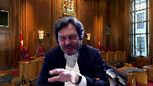

Her Majesty the Queen v. Sivaloganathan Thanabalasingham
This transcript was made with automated artificial intelligence models and its accuracy has not been verified. Review the original webcast here.
Justice Wagner (00:00:00): Bonjour et bienvenue à cette audience en ligne, qui se déroule par vidéoconférence.
Je tiens à souligner les circonstances uniques dans lesquelles cette audience a été organisée et je remercie tous les avocats de leur patience et de leur collaboration quant à l’organisation de cette audience.
Malgré la nature virtuelle de cette audience, je tiens à souligner que nous allons procéder tout en respectant les pratiques et les règles d’éthique habituelles propres à une salle d’audience.
Alors, commençons.
Dans la cause de Sa Majesté la Reine contre Sivelago Ganatan
Tanabala Singham, pour l’appelant de Sa Majesté la Reine, Maître Maude Paillette, Maître Richard Audette, pour l’amicus courrier, Maître Louis Belleau et Maître Antoine Grondin Couture.
Maître Paillette, votre micro n’est pas ouvert Maître Paillette.
Justice Brown (00:01:18): Bye-bye.
Speaker 1 (00:01:19): Merci.

La plante se prévaut de l’appel de plein droit parce que les erreurs de droits commises, selon nous, par la Cour d’appel affectent non seulement l’issue du dossier en l’espèce, mais auront également un impact sur de nombreux dossiers criminels et ce, même après la fin du régime transitoire prévu par l’arrêt Jordan.
Premièrement, les erreurs dont nous parlons en particulier sont la prise en compte du choix de poursuite dans l’analyse des critères de l’événement distinct.
Cette prise en compte risque de créer de nombreux délais dans le système de justice criminelle.
Et le deuxième élément, donc le refus de déduire le délai relatif à la non-disponibilité de l’avocat de la défense, limite indûment les moyens dont disposent les tribunaux pour se conformer à l’arrêt Jordan.
Je plaiderai l’aspect de l’événement distinct et c’est mon collègue Maître Audet qui enchaînera avec les questions de la non-disponibilité de l’avocat et du régime transitoire.
Pour répondre très brièvement à l’amicus au sujet des grièves présentées, nous vous soumettons que ce sont toutes des questions de droit puisque l’application du droit ou d’une règle juridique lorsque les faits ne sont pas contestés comme en l’espèce est une question de droit.
D’ailleurs la qualification de délai constitue une question de droit et pour le point que je vais vous plaider en particulier, ce qu’on vous soumet c’est que la prise en compte d’un critère juridique non pertinent à l’analyse de la qualification d’un délai est une erreur de droit.
Donc ce qu’on vous soumet c’est qu’ici la Cour d’appel a ajouté un critère à l’analyse de l’événement distinct.
Donc l’événement distinct habituellement prévu par cette Cour, l’analyse porte sur deux critères.
Donc est-ce qu’il y a donc un événement imprévisible et inévitable qui est survenu et qui a créé des délais?
Et est-ce que la Couronne a tenté raisonnablement d’atténuer l’impact de ces délais-là?
Justice Côté (00:03:31): Maître Payette, j’ai une question pour vous, je m’excuse de vous interrompre.
Sur cette question d’événement distinct, est-ce que vous prétendez que la cause de la prolongation de la durée de l’enquête préliminaire, c’est une question de droit, n’est-ce pas simplement une question de fait, de savoir la cause de cette prolongation-là?
Speaker 1 (00:03:52): En fait, ce que nous vous soumettons, c’est d’ajouter un critère qui n’est pas pertinent, comme ici, ce que je vous soumets, le critère non pertinent à l’analyse de la qualification de l’événement distinct.
Ce que la Cour d’appel ajoute, c’est est-ce que la Couronne a fait le bon choix de poursuite initiale.
Alors ça, c’est une question de droit et c’est une erreur de droit, nous vous soumettons, puisqu’on rajoute un critère à l’analyse de l’événement distinct qui n’est pas pertinent.
Speaker 2 (00:04:22): Oui, Maitre Payette, il me semble que vous suggérez dans votre mémoire, c’est le paragraphe 34, que le désaccord sur la conclusion qu’il y avait eu une violation du paragraphe 11B, et donc l’analyse au complet et le sujet de l’appel.
Vous avez décrit la question à des tiges comme est-ce que la majorité de la Cour d’appel a erré en droit en concluant à une violation du paragraphe 11B de la Charte.
Alors, est-ce que c’est l’analyse au complet qui est devant nous aujourd’hui?
Speaker 1 (00:05:04): Je crois que oui, puisque tant la qualification de l’événement distinct et la qualification du délai défense ont effectivement un impact sur l’application du régime transitoire.
Alors c’est effectivement la question au complet qui est devant vous aujourd’hui puisque la dissidence porte. Oui.
Speaker 2 (00:05:29): Mais comment, exactement, comment décrivez-vous les questions de droit qui étaient le sujet…
Excusez-moi.
Comment décrivez-vous la question sur laquelle le juge en chef, le juge gagnant était décident en cours d’appel?
Exactement, la question de droit.
Speaker 1 (00:05:59): Pour ce qui est de l’événement distinct, et je laisserai peut-être à Maître Audet plaider sur les éléments dont il est responsable, mais pour ce qui est de l’événement distinct, ce qu’on comprend du juge Gagnon, c’est que, et puis ça je peux vous référer au paragraphe 197 de la décision de la Cour d’appel, c’est que finalement il indique que la prise en compte du choix de la procédure, de la poursuite initiale, efface finalement la vraie cause de l’événement distinct et du délai qui est donc tout ce qui s’est produit pendant l’événement distinct.
Donc c’est une prise en compte qui n’est pas pertinente et qui donc efface la vraie raison de l’événement distinct et du délai.
Et ici, si je peux me permettre, le point de départ de l’analyse de l’évaluation doit se retrouver au fait que les deux parties, de façon commune, avaient prévu que l’enquête préliminaire devait durer dix jours.
Les deux parties prenant en compte le fait que la Couronne voulait présenter une preuve permettant de citer pour un meurtre au premier degré, les deux parties avaient évalué que cela ne prendrait que dix jours.
Or, il y a eu un dépassement et l’analyse, je vous soumets, doit commencer, c’est ça le point de départ de l’analyse de l’événement distinct.
La qualification de l’événement distinct ne découle pas du choix de la poursuite mais de l’événement imprévisible qui survient par la suite.
D’ailleurs, cette cour dans l’arrêt KJM, rendue en 2019, si on revient très rapidement dans les faits, on se souviendra que la Couronne avait demandé l’admissibilité de la déclaration de l’accusé.
Et au final, la Cour a décidé, la logiste de première instance a décidé que cette déclaration était inadmissible.
Or, ce n’est pas…
Justice Wagner (00:08:19): En fait, maître, ce que le juge de première instance a reproché, ou a mis en doute en tout cas, c’est la stratégie de la Couronne du ministère public de procéder pour un meurtre de premier degré, compte tenu du contexte de violence conjugale, ce qui a entraîné effectivement un allongement, si vous voulez, de l’enquête préliminaire et donc des délais additionnels.
Ce qui fait l’objet de quelques commentaires en appel, notamment des juges d’incidence, c’est que c’est une approche très sévère de mettre en doute la stratégie ou la décision du ministère public de déposer ou de poursuivre une accusation de meurtre de premier degré et que le premier juge, comme la Cour d’appel, la majorité, n’aurait pas dû s’immiscer dans ce choix du ministère public.
Speaker 1 (00:09:05): Effectivement.
Surtout que ce choix devait rajouter un cas de jour à l’enquête préliminaire.
Or, une enquête préliminaire de dix jours dans un dossier de meurtre en matière de violence conjugale, c’est tout à fait raisonnable et c’est tout à fait courant.
Ce n’est pas un exercice déraisonnable de ne pouvoir discrétionnaire de demander une enquête préliminaire de dix jours dans un tel dossier.
Maintenant, simplement peut-être pour revenir à KJM, le délai de la période pour l’événement distinct et le délai par rapport aux transcriptions et le délai par rapport à la non-disponibilité ou en fait au retard de l’accusé à une certaine date ont été retranchés par cette cour.
Or, le fait qu’il y ait eu une réponse négative à la demande de la poursuite, c’est-à-dire que la déclaration a été jugée inadmissible, ne fait aucunement partie de l’analyse ni de l’événement distinct ni du délai défense.
En fait, ce n’est pas un critère pertinent, ce n’est pas la source du délai.
Ce que nous vous soumettons, c’est que si de façon régulière on prend en compte le choix de la poursuite pour analyser le délai d’un événement distinct, les circonstances peuvent être innombrables.
Ça peut être suite à une demande d’admissibilité d’une déclaration, d’une preuve, d’une découte électronique, de perquisition.
Si à chaque fois le tribunal doit revoir la décision de la poursuite et refaire un examen, ça va causer des délais et ce qu’on vous soumet, c’est que c’est tout à fait contraire à l’esprit Jordan.
Et non seulement c’est tout à fait contraire à l’esprit Jordan, mais la question se posera sur la parcelleté d’un tribunal qui de façon régulière et sans allégation d’abus devient réviseur des choix de la poursuite et décideur également.
Ce qu’on vous soumet, c’est que cette erreur-là a un impact non seulement sur cette cause, mais on aura un également sur de nombreux autres dossiers et créera des délais.
Donc je vois que le temps file.
À moins que vous ayez bien sûr des questions, je laisserai le micro à mon collègue Maître O’Day.
Justice Wagner (00:11:47): Je présume que c’est Maître Audet qui va nous répondre concernant les autres arguments, notamment le calcul des délais qui ont été l’objet des débats.
Overlapping speakers (00:11:56): Effectivement, c’est effectivement.
Merci beaucoup.
Justice Wagner (00:11:59): Merci maître.
Speaker 3 (00:12:04): Monsieur le juge en chef, mesdames et messieurs les juges, bonjour.
Le sujet de la portion dont je vais traiter est double.
D’abord, il sera question de la tentative ou des tentatives de la Cour supérieure dans le but d’avancer la tenue du procès au constat d’un délai institutionnel qui était peu compatible avec les prescriptions de la Rête Jordan, bien que l’arrêt ait été prononcé par la suite.
Il sera aussi question pour moi de traiter de l’application de la mesure transitionnelle en fonction du délai total qui aurait été retenu par la Cour.
Alors, j’attaque immédiatement la question des efforts qui ont été déployés par la Cour supérieure à partir du moment où la Cour s’est…
Justice Wagner (00:12:46): interrompre bientôt.
Allez-vous nous entretenir également sur l’impact de l’erreur du premier juge, le juge Boucher, sur la prise en compte de la gravité de l’infraction.
Speaker 3 (00:12:58): Monsieur Jean-Jacques Wagner, oui, effectivement, je vais en traiter rapidement, sans aucun doute, mais je vais tenter de le faire, effectivement.
Donc, le dossier se transporte devant la Cour supérieure en juin 2015 et la date de procès original qui est arrêté est le 12 février 2018.
À ce moment-là, c’est 32 mois de délai institutionnel qui s’ajouteraient aux 34 premiers mois qui ont déjà couru depuis le début de l’instance.
À ce moment-là, tout le monde est bien conscient que ce délai est très peu compatible, sinon pas du tout, avec le droit de l’accuser à la tenue d’un procès dans un délai raisonnable.
Et ce qui est important, je pense, de retenir, c’est que la Cour supérieure dès ce moment-là va indiquer au parti quelle est l’intention dans la mesure du possible et dès que possible de faire ce qui est en sa mesure pour réduire ce délai.
Ce que je trouve particulier dans cette affaire, c’est que le résultat net de la décision de la Cour supérieure entraîne un certain nombre de constats qui, à mon avis, battent en brèche l’effet de l’arrêt de Jordan.
Overlapping speakers (00:14:10): OOF
Speaker 3 (00:14:10): l’esprit de collaboration que l’arrêt de Jordan semble avoir mis de l’avant et n’est pas compatible avec cet arrêt si l’esprit de Jordan est bien celui que l’on croit.

Concrètement, cinq impacts ou cinq effets, selon moi, doivent être retenus.
Le premier est que la Cour supérieure, selon le résultat déterminé par la Cour d’appel, n’est pas autorisée à remédier au délai institutionnel dont elle n’est pas directement responsable dans la mesure où la pénurie de ressources judiciaires est victime, je vous dirais, au même titre que l’ensemble des autres partis.
Ce que je souhaite vous indiquer, c’est que dans le contexte de cette affaire, la Cour supérieure a tendu cinq offres à la défense dans le but d’avancer le procès.
Les deux plus rapides, donc les deux plus susceptibles de respecter le droit de l’accuser et donc des offres qui lui ont été tendues dans son intérêt, ont été repoussées par ce dernier.
D’une part, il y a également une offre qui est présentée au mois de juin, donc le 14 juin, dans le but de devancer le procès en septembre.
C’est la deuxième offre qui est présentée.
Cette offre va être repoussée par l’avocat de la défense pour le seul motif qu’il n’est pas disponible à cette date.
Alors, ça exclut toute considération relative au temps de préparation.
Ce qu’il y a de singulier dans notre affaire, c’est que la Cour d’appel, la majorité du moins, ne se prononce jamais quant à ce délai qui résulte d’un refus de la défense, mais pour un motif de non-disponibilité.
Ce qu’il y a de particulier aussi dans cette affaire, c’est que les tentatives de la Cour supérieure dans le but de devancer le procès sont faites de manière très proactive et elles devancent d’ailleurs le prononcé de la Rae Jordan.
À quelque part, s’il y a une chose qui vaut peut-être d’être soulignée,
c’est que la Cour n’a pas attendu le coup de semence que la Rae Jordan a lancé dans la communauté juridique pour agir d’une manière qui soit le plus respectueuse des droits de l’accusé.
Et si le résultat net de cela est que le ministère public, où enfin il n’y a pas de déductions qui peuvent être attachées à cette réalité, à tout le moins, me semble-t-il, aurait-il fallu considérer cet effort au moment d’appliquer la mesure transitoire exceptionnelle?
Justice Wagner (00:16:47): Pour être bien précis, le juge Gagnon, dans sa dissidence, conclut qu’il y a une période de douze mois, qu’il n’aurait pas fallu opposer à des tiers, mais que la défense devrait être responsable.

En d’autres mots, il explique que ce douze mois-là découle des refus.
Overlapping speakers (00:17:13): OOF
Justice Wagner (00:17:13): ou la déclaration de non-disponibilité des avocats ou de l’avocat en défense.
Et donc, en vertu de Jordan et Cody, ces délais-là devraient être imposés à la défense.
Overlapping speakers (00:17:27): Je…
Justice Wagner (00:17:27): J’aimerais que ce soit clair, comment il arrive à ce douze mois-là, et ce douze mois-là par rapport à la possibilité pour la couronne d’être disponible aussi.
Il n’y a pas une controverse également à ce niveau-là.
Pourriez-vous m’éclairer, s’il vous plaît?
Speaker 3 (00:17:41): Bien.
Alors, merci M. Jean-Jacques Wagner.
Alors, essentiellement le 12 mois tient compte de la première offre qui a été présentée au 21 janvier 2016 qui proposait un procès qui débute dès avril suivant, donc avril 2016.
Pour cette date, la valse de défense est déclarée non disponible parce qu’occupée dans une autre cause, mais a aussi allégué qu’il ne disposait pas d’un temps de préparation suffisant, d’un temps de préparation nécessaire dans les circonstances.
Justice Brown (00:18:12): Mais la croûne n’était pas préparée en septembre 2016.
Justice Brown (00:18:18): parce que la poursuite n’a pas eu le temps de produire la requête sur l’admissibilité de certaines déclarations.
Est-ce que la Couronne était préparée en ce temps?
Speaker 3 (00:18:28): Merci de votre question, M. le juge Brown.
La réponse à cette question, selon moi, c’est oui.
Il y a deux documents qui n’étaient pas produits, disons, pour les fins du procès qui devait être tenu, une série d’admissions par rapport à laquelle je me dépêche de préciser que ce n’était qu’une question de traduction d’admission qui avait déjà été remise dès juin 2015.
Au moment de fixer le procès, la liste des admissions est en possession de la défense.
Ce n’était qu’une question de traduction.
En ce qui concerne la requête, le ministère public a toujours indiqué que son intention, et ça dès juin 2015, que son intention était tout simplement de demander dans le cadre du procès la recevabilité des mêmes déclarations qui avaient été jugées recevables par le juge de paix dans le cadre de l’enquête préliminaire, ce qui donc ne demandait pas, ne commandait pas en principe de débat supplémentaire.
Mais j’ajouterai ceci, dans le scénario où le ministère public n’aurait pas produit la requête attendue, je vous dirais que c’est donc la poursuivante qui en aurait subi le préjudice, et dans le pire des scénarios donc, elle aurait été privée de la possibilité d’utiliser ces déclarations.
Mais si la question est de savoir si un procès pouvait être tenu à la date prévue, selon moi la réponse est clairement oui.
Overlapping speakers (00:19:45): Les douze mois se trouvent dans avril à avril.
Speaker 3 (00:19:49): C’est exact, donc d’avril 2016 à avril 2017.
Alors ça c’est en fonction de la première offre qui a été faite.
Evidemment là-dessus je vais insister sur un fait.
Justice Brown (00:20:03): Mais en novembre 2016, la Cour a offert janvier 2017, la défense était disponible, mais pas la Couronne.

Pourquoi est-ce que le délai entre janvier et avril 2017 reste avec la défense?
Speaker 3 (00:20:22): Selon ma compréhension
, l’offre qui a été faite au mois de novembre tenait compte de la réalité suivante.
La défense était déclarée non disponible au départ pour un procès en septembre.
Ce que le ministère public a répondu concernant ce délai m’échappe au moment où on se parle.
Je vais tenter de le rétracer dans les prochaines minutes, mais je ne suis pas convaincu que la poursuite s’est déclarée non disponible à ce moment-là.
Ce dont j’ai souvenir, c’est plutôt qu’on aura demandé au mois de mars un espèce de délai d’accommodement d’environ trois semaines pour débuter le procès plutôt en avril 2017.
Je vais faire la vérification en ce qui concerne janvier 2017 et si l’opportunité m’est donnée de revenir en réplique, je vous donnerai une précision à ce moment-là.
Justice Côté (00:21:18): Mais à propos de la fameuse requête de Maître O’Dell concernant l’admissibilité de certaines déclarations…
Overlapping speakers (00:21:24): Oui.
Justice Côté (00:21:24): La poursuite s’était engagée initialement à la faire pour le 20 juin.
Ensuite, la poursuite a dit qu’elle n’avait pas eu le temps de le faire et c’était la journée jusqu’au 7 septembre.
La poursuite s’était engagée à la produire pour le 7 septembre.
Ensuite, la poursuite a dit «
Ah, j’ai pas eu le temps!
» Ça a été remis, la poursuite a dit «
Je vais la produire le 14 novembre.
» Et le 14 novembre, la poursuite a encore dit «
J’ai pas eu le temps!
Je vais la faire pour le 15 décembre.
» Alors, il me semble que ce semble être une requête importante pour la poursuite et ça a pris quand même six mois avant que la poursuite la produise.
Speaker 3 (00:22:01): Madame le juge Côté, je pense que vous avez raison et je le concède.
Maintenant, je pense que ce qu’il faut garder en tête, c’est que le retard ou tout retard que vous pourriez retenir à produire la requête pour les fins de l’espèce ne causait aucun délai en particulier.
Alors, il y a une, disons, une emphase ou un accent important qui a été mis par la Cour d’appel concernant ce document, mais le résultat net de cette situation est que en aucun moment, la date du procès a été retardée ou qu’on a empêché la tenue du procès de ce fait. Merci.
Alors, sur les quatre ou cinq points que je souhaitais faire valoir concernant la tentative de devancer le procès, j’insiste particulièrement sur ceux-ci.
Alors donc, le moment où la défense concernant la première date de procès possible, celle d’avril 2016, s’est déclarée non disponible, il y a déjà 41 mois qui se sont écoulés avant que l’offre soit tendue et le procès, ce moment-là, aurait eu lieu au 44e mois.
En fonction des paragraphes 56, 57 et 65 de Jordan, il me semble alors que tout le monde semble se mettre d’accord sur le fait que 30 mois est un délai suffisamment généreux pour permettre à toutes les parties de se préparer.
Il me semble difficile d’accepter qu’un avocat de la défense puisse au 41e mois déclarer qu’il n’a pas le temps de préparation nécessaire et raisonnable pour procéder au 44e mois.
Je trouve que cette manière-là de retenir l’argument de la défense par la Cour d’appel semble permettre que la préparation d’un procès commence au moment de la fixation du procès, alors que selon moi, elle doit débuter évidemment dès le dépôt des accusations et communication de preuve initiale.
D’autre part, si un accusé réclame le droit d’être jugé dans un délai raisonnable et que ce droit-là entre en conflit avec le droit d’être représenté par l’avocat de son choix, la décision de la Cour d’appel pourrait faire qu’on semble s’accommoder davantage d’ordonner l’arrêt des procédures plutôt que de demander à l’accusé de prioriser l’un de ses droits et d’en assumer la conséquence par la suite.
Ce que je veux dire par là, c’est que si le droit à un procès raisonnable dans un délai raisonnable et le droit à la représentation par l’avocat de son choix entrent en conflit, il n’y a pas de mal, il me semble d’un point de vue constitutionnel, à déclarer que l’accusé ne peut pas tout avoir.
Alors concrètement, je pense que les arrêts Smith, Rafilovic et Willier suggéraient notamment que notre système de justice criminelle ne garantit à personne une expérience exempte de choix difficiles et il me semble qu’il s’agit d’un de ces cas d’application.
Autre chose, je pense que dans le contexte, le critère d’attribution du délai à la défense n’a pas été apprécié de la même façon dans un contexte prospectif quanticipé alors qu’il n’y a pas de différence substantielle dans la manière de qualifier le délai.
Dans un délai prospectif lorsque la défense déclare non disponible, personne ne va lui reprocher de ne pas être disponible.
Il est tout à fait possible que l’avocat se soit engagé auparavant dans une autre cause et on ne va pas le blâmer pour ça, il n’en demeure pas moins que le délai va lui être attribué.
Alors dans un contexte où on tente de devancer le procès, l’avocat encore une fois n’est pas fautif, n’est pas blâmable du fait de ne pas être disponible par rapport à la tentative de devancer le procès, mais il me semble que le raisonnement devrait être le même.
Je trouve surtout lorsque j’étudie par exemple le paragraphe 91 du mémoire de l’amicus, qu’on semble voir l’attribution d’un délai à la défense comme une pénalité ou une sanction à l’avocat de la défense.
Je vous dirais là-dessus que l’attribution d’un délai à la défense n’est pas plus une pénalité que l’arrêt des procédures n’est une récompense.
Il s’agit tout simplement d’étudier dans quelle mesure le délai qui s’écoule s’explique d’une manière raisonnable et justifie malgré tout la tenue d’un procès, ce qui me semble est le cas dans notre espèce.
Autre chose, j’ai aussi une difficulté avec l’effet des refus successifs d’un avocat de la défense.
Dans ce cas-ci, on a refusé un procès en avril, on en a aussi refusé un en septembre et la question qui se pose dans l’espèce c’est combien de fois un accusé peut-il refuser la tenue d’un procès sans que quelque part on puisse excuser les autres parties de ne pas avoir pu tenir le délai dans un délai plus rapide.
Ce sont essentiellement les points que je souhaitais faire valoir et j’insiste aussi finalement concernant cette première question sur le fait que la Cour supérieure a fait ce qu’elle pouvait et aussi fait ce qu’elle devait dans les circonstances.
Le dossier s’est présenté devant elle en juin 2015 et à partir de ce moment-là, tout a été déployé dans le but de permettre un procès rapide et dans le contexte de l’arrêt actuel, le résultat est exactement le même que si la Cour supérieure n’avait absolument rien tenté ou manifesté la plus grande indifférence quant au sort de l’accusé.
Il me semble que le résultat est incongru et s’il ne devait pas entraîner une déduction à titre de télé-défense, il devrait certainement être considéré très sérieusement dans le cadre de la mesure transitoire exceptionnelle à laquelle je m’attaque immédiatement.
Justice Wagner (00:27:28): vous attaquiez.
Évidemment, une partie des délais institutionnels, là je comprends que ce que vous nous soumettez, c’est que les juges, notamment les juges de la Cour supérieure entre autres, ont été proactifs et ont essayé d’offrir des dates pour essayer d’avancer la date de procès.
Il reste quand même qu’une partie des problèmes dans ce dossier-là, c’était pour tenir l’enquête préliminaire.
En raison des horaires et des agendas des juges de la Cour provinciale et Cour du Québec, entre autres, il est impossible de tenir ces auditions-là de façon continue pendant une période de temps, ce qui a entraîné des délais additionnels.
C’est ce qu’on appelle des délais institutionnels.
Est-ce que vous êtes d’accord avec ça?
Speaker 3 (00:28:15): Je pense qu’on peut les considérer en partie institutionnelles, effectivement, mais justement, concernant le délai institutionnel total qui a été retenu par la Cour d’appel, il me semble qu’il y a une erreur manifeste.
Sur 57 mois et demi au total, la Cour d’appel et le premier juge en retiennent 43.
D’abord, le premier juge le fait en épousant tout simplement la proposition de la défense, mais sans en discourir davantage.
Mais d’autre part, si l’on étudie très rapidement les périodes de délai dans cette affaire-là, il y a une première période qui court du moment du dépôt des accusations jusqu’à la fixation de l’enquête préliminaire, qui est d’environ 9 mois.
Ensuite de cela, il y a une deuxième période qui débute du début de l’enquête préliminaire en mai 2013 jusqu’à la conclusion de celle-ci.
Il s’agit de 10 mois.
C’est le délai entre le moment où les parties sont prêtes à fixer et le moment où l’enquête préliminaire débute.
On parle d’un peu moins de 10 mois et il s’agit du premier délai institutionnel dans cette affaire.
Par la suite, l’accusé est renvoyé afin de subir son procès et on a une deuxième période d’attente qui, selon moi, doit être considérée comme courant entre la fin de l’enquête préliminaire, soit le 28 avril 2015 et le 11 avril 2016, qui était la première date disponible offerte par la Cour pour la tenue du procès, ce qui rajoute 11 mois de délai institutionnel environ.
Cela nous fait un total de plus ou moins 21 mois, tel que l’identifie le juge Gagnon.
Dans la mesure où le juge Boucher parle de 43 mois, selon moi, il s’agit d’une première erreur parce qu’il s’agit du cadre d’application de l’arrêt Morin.
Mais où est cette explication de 43 mois?
Overlapping speakers (00:30:03): All right, let’s call it a day.
Justice Wagner (00:30:03): jugement plutôt succinct, mais quand même, comment est arrivé à ce délai-là?
Speaker 3 (00:30:10): La seule chose que je puis vous répondre, et je la déplore également, c’est que l’avocat de la défense a produit un tableau dans lequel il procède lui-même à l’attribution des délais tel qu’il l’entend et le juge se contente de renvoyer au dépôt de ce tableau en le cautionnant ou en l’endossant complètement.
Et c’est dans cette mesure-là que je vous parle de cette première erreur parce que le délai institutionnel est beaucoup moindre que celui identifié par la Cour supérieure et que la Cour d’appel endosse.
Il s’agit d’une première erreur et si on la combine notamment à l’erreur qui est concédée, je pense, par l’amicus en regard de la gravité de l’infraction et du poids qui pouvait être accordé à l’accusation telle que portée, ça fait déjà deux erreurs qui permettent ou qui libèrent la Cour de l’obligation de déférence à l’égard de l’application de la mesure transitionnelle et le réexamen de cette affaire-là, il me semble, devrait conduire à un résultat différent.
D’autant plus…
Justice Wagner (00:31:07): de déférence maître,
est-ce que ça veut dire que l’on doit nous-mêmes ou un tribunal d’appel refaire l’évaluation ou l’impact des différents critères dans le cadre du régime transitionnel?
Speaker 3 (00:31:23): Je crois que oui, la Cour est dans la possibilité de le faire compte tenu.
En fait, ça dépend toujours du caractère substantiel du dossier pour permettre l’exercice, mais je vous suggère que les explications qui ont été fournies dans le cadre du débat sur la requête et la transcription complète du dossier vous permettent de faire ce survol, en tenant compte évidemment des erreurs que nous allégons concernant le délai net qui devrait être retenu.
Alors, si l’on soustrait les deux périodes de douze mois à laquelle nous faisions allusion tant maux de paillettes que moi, on arrive donc à 33 mois de délai net.
Les deux périodes de douze mois étant, s’il vous plaît répétez.
Oui, excusez-moi, donc la période d’avril 2016 à avril 2017, mais également la période d’allongement ou de dépassement de l’enquête préliminaire qui équivaut elle aussi à douze mois.
Alors, on en revient à 33 mois et vu l’absence d’obligation de déférence, l’application des critères relatifs à la mesure transitionnelle selon moi justifie un délai, c’est-à-dire une décision qui soit différente.
Je constate que mon temps est écoulé.
Justice Wagner (00:32:30): Une dernière question pour vous, quel est l’impact de cette erreur-là de ne pas avoir considéré la gravité du crime dans les circonstances, sur l’ensemble du dossier?
Speaker 3 (00:32:40): Je pense qu’elle est particulièrement importante.
Encore une fois, parce que selon moi elle ne peut pas être détachée du délai net qui a été retenu.
Dans la mesure où on parle d’un phénomène très particulier qui est celui de la violence conjugale et d’un meurtre qui survient dans ce contexte, évidemment plus le délai net qui sera retenu par la Cour sera faible, plus l’application de la mesure transitionnelle, selon moi, deviendra justifiée.
Mais encore, si le délai net retenu par la Cour devait être légèrement différent de celui auquel nous aspirons, il n’en demeure pas moins que dans les circonstances.
Il me semble alors que nous étions dans un contexte inédit, il n’y avait jamais eu d’arrêt de procédure au Québec concernant les accusations de meurtre, celui qui survient dans un contexte d’abus, dans un contexte de violence conjugale mériterait une attention toute particulière à mon avis.
Justice Kasirer (00:33:37): Monsieur le juge en chef, est-ce que vous me permettez de faire suite à la question que vous avez posée?
Maître Odé, sur cette question de l’erreur de droit quant au sérieux de l’infraction, on sait que le juge n’a pas eu, à sa décharge, n’a pas eu l’avantage de lire Cody.
Je voudrais que vous précisiez davantage l’exercice qui serait le nôtre devant cette erreur-là.
Pondération de nouveau des critères, d’accord, mais est-ce qu’il n’est pas vrai que les déterminations factuelles du juge qui seraient pertinentes à cette pondération-là ne sont pas de notre ressort?
Speaker 3 (00:34:25): Je ne suis qu’en partie d’accord avec cette affirmation pour la raison suivante, c’est-à-dire que si la détermination concernant la mesure transitoire exceptionnelle est accompagnée d’une erreur de droit, il me semble entendu que cette Cour est autorisée à procéder un exercice de nouveau.
Elle peut certainement partager certaines des déterminations du premier juge, mais si par exemple au niveau du degré d’empressement de la défense à tenir le procès, et je fais allusion particulièrement au fait que le 18 novembre 2016, ce n’est pas la défense qui est prête à fixer un procès, à tenir le procès en avril suivant, c’est la Cour supérieure qui l’impose.
Le 18 novembre, Maître Alédia, au nom de la défense, indique qu’il y a encore un empêchement concernant la tenue du procès, concernant une question d’aide juridique.
Il est entendu à mon avis que le fait que le juge Boucher semble conclure qu’il y a une collaboration raisonnable de la part de la défense peut certainement être revisité dans ce contexte-là, de même que la question du préjudice.
Un accord avec le juge Boucher n’est pas impossible, mais il n’y a pas de retenue je pense qui val dans les circonstances, parce que la pondération des différents critères pour essayer de répondre à votre question plus directement, la pondération de ces critères relève tout simplement de l’application de la norme juridique qui est la qualification des délais au sens du cadre prévu par Morin.
Je pense que c’est le mieux que je puisse faire dans les circonstances et je vous remercie de votre attention.
Justice Wagner (00:36:20): Alors, ce que nous allons faire, nous allons nous arrêter de prendre la pause du matin, 15 minutes.
Ne vous inquiétez pas, mettez de belle eau, vous aurez tout le temps par la suite, je vous accorderai tout le temps nécessaire, même qui dépasserait les 30 minutes normalement allouées.
Alors, on se revoit dans 15 minutes. Merci.
La Cour.
Alors bonjour, alors maître Bello, nous vous écoutons.
Speaker 4 (00:37:23): Monsieur le juge en chef, mesdames, messieurs les juges, bonjour.
Je vous remercie d’abord de m’accorder le privilège de m’adresser à la Cour en tant qu’amicus curiae, c’est très apprécié, je vous en remercie.
Je commence sur une observation dont tout le monde est conscient, c’est que lorsque la Cour a prononcé l’arrêt de Jordan, ça a eu l’effet d’un coup de tonnerre dans le ciel de l’administration de la justice et on a dû s’adapter rapidement aux normes qui ont été édictées par la Cour et certaines vieilles habitudes ont été sérieusement bousculées, ce qui n’est pas toujours une mauvaise chose.
Ce qui résulte de l’arrêt de Jordan, c’est l’application bien entendu d’une nouvelle méthode d’analyse de la question des délais.
Les juges d’instance appliquent maintenant des nouvelles normes en fonction desquelles ils ou elles vont, lorsqu’ils vont constater la violation du droit d’être jugé dans un délai raisonnable, ordonner des arrêts de procédure.
Il est important de souligner que dans Jordan, la Cour a fait certaines observations qui impliquent clairement que les affaires de meurtre sont assujetties à la grille d’analyse Jordan.
Au paragraphe 78, par exemple, de Jordan, la Cour fait des observations concernant le fait qu’un procès de meurtre typique ne sera pas en général considéré comme suffisamment complexe pour considérer une…
Overlapping speakers (00:38:46): in the end.
Speaker 4 (00:38:47): constitue une circonstance exceptionnelle.
Par conséquent, je pense qu’il faut accepter le fait que l’arrêt de Jordan peut donner lieu à des arrêts de procédure dans des affaires de meurtre et que, là où le délai dépasse 30 mois, ça n’a rien de particulièrement scandaleux.
Les juges d’instance sont bien sûr chargés d’appliquer cette grille d’application, ce nouveau modèle d’analyse, et leurs décisions sont sujettes à révision.
Une chose que l’arrêt de Jordan n’a pas changé, c’est la norme de contrôle à l’égard de ces décisions des juges d’instance.
Cette méthode de révision est fondée sur un certain nombre de principes, les plus importants sont les suivants.
La décision d’ordonner l’arrêt des procédures en vertu du paragraphe 24.1 de la charte relève du pouvoir discrétionnaire du juge d’instance.
Les questions de qualification des délais et l’appréciation de leur caractère raisonnable sont des questions qui doivent être révisées selon la norme de la décision correcte, c’est des questions de droit.
Mais le tribunal de révision doit faire preuve de déférence à l’égard des conclusions de fait du juge d’instance et l’intervention sur les conclusions de fait n’est justifiée qu’en présence d’erreurs manifestes et dominantes, c’est-à-dire d’une erreur grave.
À cause de cela, nous avons soumis à la Cour qu’il faut selon nous se demander si le désaccord en cours d’appel ici porte sur une ou des questions de droit ou plutôt sur des questions de fait.
Nous avons proposé cette discussion en gardant à l’esprit que la distinction entre une question de droit et une question de fait nous fait parfois entrer dans un labyrinthe où on peut se perdre assez facilement, les seuls qui s’y sont jamais perdus sont ceux qui ne sont jamais allés là.
Ça soulève parfois des questions complexes.
Et il faut aussi avoir à l’esprit les observations de la Cour dans Biniaris notamment concernant le fait que le temps des juges peut parfois être mieux utilisé à régler des questions sur le fond plutôt que d’essayer de savoir si oui ou non on a compétence pour les trancher.
Mais il faut aussi je pense se mettre en garde contre le risque que la Cour soit éventuellement saisie d’un pourvoi à chaque fois que des juges d’une cour d’appel ne s’entendent pas sur la façon d’interpréter les faits en première instance et ça, ce n’est pas souhaitable.
Alors, sur la question de la déférence, c’est le rôle du juge d’instance de trancher les questions de fait et à moins qu’il fasse grossièrement erreur, on ne doit pas toucher à ses conclusions là-dessus.
Et nous citons une jurisprudence abondante sur ce sujet-là au pages 12 à 14 de notre mémoire que nous avons reproduit dans notre condensé au pages 2 à 5 pour des questions de commodicité, mais je ne veux pas y référer spécifiquement, mais je voudrais que la Cour laisse sous la main.
Par exemple, et nous avons réduit la quantité de jurisprudence parce qu’il y en a une quantité abondante et on a constaté à la lecture de cette jurisprudence qu’il y a plusieurs sujets qui sont considérés généralement comme des questions de fait, notamment, ici dans notre dossier, la Couronne soulève plusieurs arguments concernant la cause des délais, est-ce que c’est des problèmes de traduction à l’enquête préliminaire, est-ce que c’est la stratégie de la poursuite, est-ce que c’est la maladie de l’avocat de la défense, est-ce que c’est l’absence d’un témoin récalcitrant, l’indisponibilité de l’avocat, etc. Selon les autorités, nous sommes d’avis que toutes ces questions sont de la compétence du juge d’instance comme question de fait, sauf s’il fait une erreur manifeste et dominante dans la détermination du fait que la maladie de l’avocat, par exemple, a été une cause d’une part du délai, cette conclusion appelle à la déférence.
Alors, la question pour une cour d’appel, et on peut se demander si les juges majoritaires n’ont pas commis une erreur à cet égard, ce n’est pas de savoir si le juge d’instance a rendu la bonne décision, c’est de savoir si le dossier, les faits du dossier peuvent raisonnablement soutenir la décision qu’il a rendue.
C’est ça qui était l’enjeu devant la cour d’appel.
Est-ce qu’un autre juge aurait pu en venir à une conclusion différente?
C’est possible.
Les positions que les juges de la cour d’appel ont respectivement exprimées démontrent clairement que trois juges auxquels d’autres se sont ralliés peuvent avoir des opinions différentes sur les faits d’un dossier, mais ce n’est pas, à notre humble avis, du ressort de cette cour de décider laquelle de ces conclusions de faits retenus par les juges de la cour d’appel est la bonne.
Il s’agissait, selon nous, de savoir si le juge de première instance pouvait.
Overlapping speakers (00:43:53): Lui?
Speaker 4 (00:43:53): en se fondant sur le dossier qu’il avait devant lui, tel qu’il se présentait à lui, tirer les conclusions qu’il a tirées.
Et, en tout respect, nous estimons que c’est exactement l’approche que le juge Vauclair a appliquée pour les juges majoritaires.
Si vous lisez le paragraphe 150, c’est le dernier paragraphe de l’opinion du juge Vauclair, le mot reproduit dans notre condensé à la page 7.
C’est très court, je vous le cite, le juge d’expérience de la Cour supérieure, connaissant les problèmes de son district et conscient des parties présentes devant lui, il était saisi d’un dossier qui justifie les conclusions auxquelles il parvient, lesquelles exigeaient la déférence.
Justice Wagner (00:44:33): Maître Bellot, sur ce point-là, en ce qui concerne les délais, le fait de qualifier des délais, par exemple concernant l’impossibilité ou la non-disponibilité de l’avocat, par exemple, et donc le fait que le premier juge ne considère pas que ce sont des délais qui doivent être opposés ou opposables à la défense, laisse pas là à tout le moins une question mixte de faits de droit dans la mesure où cette qualification-là découle des enseignements de la Rae Jordan, et surtout de Cody, par la suite, qui mentionne que dorénavant la complaisance ne sera pas tolérée et que les avocats, le barreau, etc., devront s’ajuster et que le juge pourra effectivement opposer des délais comme ceux-là à la défense pour refuser, par exemple, un arrêt des procédures, laisse pas là une distinction.

Speaker 4 (00:45:31): D’abord, je vous dirais tout premièrement que c’est une question très intéressante, mais deuxièmement, je pense qu’on peut la considérer comme étant quelque chose que le juge a résolu dans la mesure où il a décidé que ce n’était pas un délai attribuable à la défense, dans le sens que ce n’était pas une cause du délai, l’indisponibilité de l’avocat.
Ça, c’est une question de fait et la qualification est entièrement dépendante de cette conclusion de fait.
Maintenant, que la Cour désire s’intéresser à cette question-là, je comprends parce que c’est une question importante, à mon avis.
La question est de savoir si c’est le bon dossier pour la traiter, mais sur le fond, je vais vous en parler tout à l’heure.
Si vous permettez, je continuerai simplement sur ce chapitre de la question de la déférence à l’égard des questions de fait.
Donc, ce que le juge Vauclair, à mon avis, a fait, c’est de dire, bien, regardons le dossier, voyons voir si dans sa détermination des faits, le juge a commis des erreurs manifestes, il arrive à la conclusion que non et, en conséquence, il estime qu’il n’y a pas lieu d’intervenir.
Les juges dissidents font plutôt, à notre avis, une relecture du dossier et tirent des conclusions de faits qui sont différentes de celles que le juge Boucher a tirées.
Nous les avons énumérées dans notre mémoire, je ne veux pas les reprendre une à une ici, mais nous sommes d’avis que les conclusions de faits du juge Boucher concernant justement l’indisponibilité de l’avocat, la question de la stratégie de la poursuite, la question du préjudice notamment, sont des questions de faits qu’il pouvait décider et qui sont soutenus par le dossier.
Alors, bien sûr, un autre juge aurait pu en venir à une autre conclusion, mais ce n’est pas ça qui était vraiment l’enjeu du dossier.
Justice Wagner (00:47:34): Au-delà de ça, je m’excuse, M. Bellot, encore une fois, parlant d’erreur de fait et d’erreur de droit, le fait que, et la majorité de la Cour d’appel et les dissidents, conviennent que le premier juge a fait une erreur, je vous laisserai qualifier l’erreur, en ne considérant pas ou ne donnant pas d’importance suffisante à la nature de l’infraction, à la gravité de l’infraction.

N’est-ce pas là une erreur de droit qui change la donne? Oui.
Speaker 4 (00:48:04): Là-dessus
, je pense que, d’abord, nous avons reconnu dans nos observations qu’il n’y a pas de désaccord entre les juges de la Cour d’appel pour conclure qu’il s’agissait d’une erreur de droit de la part du juge Boucher et, dans une certaine mesure, oui, nous sommes d’accord avec cette qualification-là.
Alors, les juges sont d’accord.
Ce que le juge Boucher a dit dans son jugement, c’est « Seriousness of the offense charge is a factor of very limited relevance in the analysis ».
Ça, c’est une observation qui me semble inexact, parce que la vérité, c’est que, dans l’analyse de la mesure transitoire exceptionnelle, la gravité de l’infraction a un poids significatif.
Et, dans Cody, la Cour a dit ceci «
Il est important de clarifier que la jurisprudence de Williamson n’a pas pour effet d’écarter le rôle important que joue la gravité de l’infraction et le préjudice subi ».
Il n’a pas pour effet d’écarter le rôle important.
Alors, d’abord, on peut dire que le juge Boucher, comme vous l’avez souligné tout à l’heure, n’avait pas le bénéfice de l’arrêt Cody lorsqu’il a rendu sa décision, et que d’autres juges ont commis la même erreur par la suite.
Mais, il y a d’autres choses qu’il faut dire à propos du jugement du juge Boucher là-dessus.
C’est qu’il mentionne dans son jugement, il fait des commentaires par rapport à la gravité de l’infraction qui sont les suivants.
Vous les trouverez dans notre compendium condensé à la fin, où les paragraphes sont surlignés, mais je vais vous les citer.
Paragraph 8, aligné à 6, le juge Boucher écrit, dans la méthode de l’analyse de l’exception transitoire, « The Crown may establish transitional exceptional circumstances if it satisfies the Court that the delay is justified based on the party’s reasonable reliance on the law as it previously existed, e.g. prejudice
to the accused and the seriousness of the offense often played an
important role
under the previous law ».
Au paragraphe 30 de son jugement, il dit ceci, «
The Court must balance all the circumstances of the case, including factors that were relevant under the previous state of the law as laid out in R vs. Morin ».
C’est le boilerplate de la description de tâche du juge qui aborde la question, et ce n’est pas tout de le dire, encore faut-il l’appliquer.
Et si vous allez au paragraphe 36, le juge Boucher écrit ceci, «
The Court takes into consideration that the accused is charged with second-degree murder, a very serious offense, the Court is mindful that a woman lost her life in tragic circumstances, and that society has an interest in having a serious case tried on its merits ».
Alors, qu’est-ce que ces extraits indiquent?
C’est bien ce que le juge Vauclair a retenu, c’est-à-dire que le juge Boucher, nonobstant la phrase malheureuse qu’il a dite concernant le poids relatif de la gravité de l’infraction, était bien au fait de la gravité de l’infraction et qu’il en a tenu compte.
Et surtout, au sens de Cody, qu’il n’a pas écarté de son analyse le rôle important de la gravité de l’infraction.
Une autre chose qui est importante de souligner peut-être, qui a une pertinence par rapport à ça, c’est que le juge Boucher, ne l’oublions pas, avait lu les transcriptions de l’enquête préliminaire.
Donc, ça lui permettait d’apprécier l’ensemble des circonstances du meurtre et sa perception de la gravité de l’infraction, malgré qu’il n’élabore pas là-dessus dans son jugement, sauf lorsqu’il discute de la question du meurtre au premier degré par rapport au meurtre au deuxième degré, sa perception des faits est donc connectée avec la réalité du dossier et la réalité de ce qui s’est passé dans l’instant.
Il connaissait autre chose que le simple fait que théoriquement, le meurtre est une infraction grave, donc il connaissait le dossier.
Et je pense que devant cet ensemble de circonstances-là, on peut se demander jusqu’à quel point est-ce que la phrase qu’il a prononciée en disant « relevance is limited », est-ce que cette phrase concernant la pertinence limitée a eu un impact sur sa conclusion de la violation de 11B?
Alors, ces conclusions sur la longueur du délai, on parle quand même d’un délai qui approche les cinq ans, sur la cause du délai, sur la responsabilité de la poursuite, ça reste des facteurs fondamentaux qui motivent ces conclusions.
Et quand il dit « the court takes into consideration that the
accused is charged with second-degree murder, a very serious offense, and the court
is mindful that a woman lost her life in tragic circumstances » comment ne pas conclure qu’il avait à l’esprit précisément les critères qu’il devait appliquer pour atteindre les conclusions qu’il a atteint?
Et de là, nous soumettons que je pense qu’il est raisonnable de conclure que s’il n’avait pas formulé cette observation qui est, à mon avis, erronée, il aurait néanmoins conclu à l’arrêt des procédures.
Justice Kasirer (00:53:48): Mme Bellot, est-ce
que vous me permettez juste sur cette même question, je comprends votre point, juste je m’intéresse à l’exercice qui est le nôtre devant cette erreur de droit pour faire suite à la question du juge en chef.
Si on regarde votre mémoire après avoir fait le constat de l’erreur de droit dont on parle, vous dites à 127 de votre mémoire, cette erreur dépouille la conclusion du juge Boucher sur le caractère raisonnable du délai de la déférence qui lui serait normalement dû et donne ouverture à une pondération de nouveau en appel les critères de la mesure transitoire exceptionnelle.
Et plus loin, vous refaites à 131 l’affirmation que vous venez de faire, 131 il faut donc se demander si l’erreur du juge Boucher concernant le poids relatif de la gravité, donc vous évoquez à nouveau la pondération qui doit être faite, a véritablement eu un pacte déterminant que lui accordent les juges dissidents.
Il nous paraît raisonnable de soutenir, alors on a votre conclusion, mais entre le constat que la pondération doit être refaite et la conclusion à laquelle vous aboutissez, c’est-à-dire que c’est raisonnable de conclure que si le juge, le premier juge avait eu le bénéfice des enseignements de codé, il aurait conclu que ça n’avait aucun impact sur sa décision d’ordonner l’arrêt des procédures.
Qu’est-ce qu’on attend de la Cour suprême dans ce bout de l’exercice de notre tâche?
Speaker 4 (00:55:44): Oui, je pense que je vais vous exposer comment je perçois la question qui me semble très pertinente dans les circonstances parce que, évidemment, si vous constatez l’erreur de droit, je pense qu’il faut d’abord se demander si l’erreur de droit a eu un impact.
Si elle a eu un impact, à ce moment-là, qu’est-ce qu’on fait?
Il y a deux cas de figure.
Ou bien on retourne le dossier au juge de la Cour supérieure pour qu’il prononce le jugement avec le correctif qu’il renvoie à Cody et au fait que, contrairement à l’erreur qu’il a commise, le facteur de la gravité de l’impraction doit être pondéré comme étant important.
Ou alors, et c’est la position que Maître O’Day vous a soumise tout à l’heure et avec laquelle je ne suis pas en désaccord, c’est à la Cour de déterminer sur le dossier si, une fois constatée cette erreur, est-ce que le juge aurait différemment apprécié l’application de la mesure transitoire exceptionnelle parce que je pense qu’effectivement cette erreur porte sur cette question restreinte dans le pourvoi.
Alors, si la Cour devait arriver à la conclusion que si le juge s’était correctement dirigé en droit, il aurait forcément conclu qu’à cause du poids important de la gravité de l’infraction, il aurait conclu à l’application de la mesure transitoire exceptionnelle, donc il y a lieu d’annuler l’ordonnance d’arrêt des procédures et ordonner un nouveau procès.
Je ne comprends pas.
Justice Kasirer (00:57:24): mais après avoir constaté l’erreur de droit, on peut nous tabler sur ces déterminations factuelles et refaire la pondération à partir de la donne que fournit le juge, c’est-à-dire lui fait des déterminations factuelles, on prend d’air.
C’est ça votre point.
Speaker 4 (00:57:45): Exact.
Il n’y a pas lieu de reviser les déterminations factuelles que le juge a faites, mais en fonction des déterminations factuelles que le juge a faites, en appliquant la version, disons, corrigée de la règle de droit, refaire l’exercice de la pondération de l’application de la mesure transport exceptionnelle et déterminer ainsi s’il y a lieu de changer le résultat.
Si vous me permettez, je voudrais revenir sur la question de l’indisponibilité de l’avocat, parce que ça me semble quelque chose qui a une certaine importance.
La Cour a expliqué dans Jordan, et je ne discute pas du bien-fondé de cette proposition, au paragraphe 64, la défense cause directement le délai si le tribunal et le ministère public sont prêts à procéder, mais pas elle.
Le retard découlant de ce manque de disponibilité sera imputé à la défense.
Alors, en principe, si à un moment donné le tribunal et la poursuite sont prêts et que la défense refuse une date de procès parce qu’elle est indisponible, à ce moment-là, on peut imputer le délai à la défense.
Maintenant, ça soulève certaines questions dans le contexte de ce dossier, parce qu’on ne parle pas du moment où le procès a été fixé, on parle du moment où on a tenté de devancer le procès.
Je vais revenir plus en détail là-dessus tantôt, mais pour les fins de la discussion, le 8 juin 2015, quand la date du procès a été fixée, il n’y a pas eu de discussion sur les disponibilités de l’avocat de la défense, pour la simple et bonne raison que la première date disponible était le 12 février 2018, c’est-à-dire 32 mois plus tard.
Alors, la Cour n’a pas proposé une date plus rapprochée à mettre la Légia, et donc à ce moment-là, il est clair que sa disponibilité ne posait aucun problème.
La raison du délai, c’est l’indisponibilité de la Cour, qui n’était pas capable d’offrir de date pour faire un procès avant 32 mois plus tard.
Et ça, dans le district de Montréal, à cette époque-là, c’est un phénomène que tout le monde connaissait, ce n’est pas un cas d’exception, c’est comme ça que ça fonctionnait.
Par la suite, à partir du mois de janvier 2016 et jusqu’en novembre 2016, tout le monde a essayé de rapprocher la date du procès pour essayer de réduire le délai.
Et une question qui s’est posée devant le juge Boucher et qui a été débattue devant la Cour d’appel, c’est de savoir si, une fois qu’on a fixé une date de procès, est-ce qu’on peut revenir en arrière et imputer à la défense l’indisponibilité de l’avocat quand on cherche à devancer le procès.
Et pour moi, il y a une grande différence entre le moment où l’avocat se présente pour fixer la date du procès et, par la suite, au moment où on tente de trouver une solution pour essayer de rapprocher la date, ce n’est pas tout à fait le même scénario, le même cas de figure. Pourquoi?
Parce que ça a rapport aussi avec les obligations d’un avocat.
Dans le contexte de Jordan, mais plus généralement dans son rôle dans l’administration de la justice, c’est que l’avocat qui accepte un mandat doit être disponible pour faire le procès de son client dans un délai raisonnable.
Et une fois que la date du procès est fixée, son obligation, c’est d’être disponible pour que le procès puisse avoir lieu à cette date-là.
Et le client, bien entendu, a la liberté de retenir les services de l’avocat de son choix.
Mais si ce choix du client empêche le tribunal de procéder dans un délai raisonnable, c’est la conséquence du choix de l’accusé et personne ne va s’indigner que le délai qui résulte de ce choix-là soit imputé à la défense.
En d’autres mots, l’accusé ne peut pas revendiquer le droit d’être jugé rapidement et empêcher que ce droit-là se réalise parce que son avocat n’est pas disponible.
Par contre, à notre avis, il faut qu’il y ait une certaine prévisibilité dans l’appréciation de la responsabilité du délai.
Et il faut mettre le curseur quelque part lorsqu’il s’agit de déterminer si c’est l’indisponibilité de l’avocat qui cause le délai ou autre chose.
En d’autres mots, à quel moment est-ce que l’indisponibilité de l’avocat est la cause du délai?
Et selon nous, c’est en principe, au moment où le procès est fixé, que l’indisponibilité peut, au sens de paragraphe 64 de Jordan, être considérée comme la cause du délai et imputée à la défense.
Dans notre dossier, c’est le 8 juin 2015.
Alors, hypothétiquement, si le 8 juin 2015 le tribunal et le ministère public avaient été prêts et que la défense avait dit «
je ne suis pas disponible », eh bien, clairement, en vertu de 64 de Jordan, le délai aurait été causé par la défense.
Mais, lorsqu’il était devant la Cour le 21 janvier 2016, le maître de la Légion a expliqué au juge David que, jusqu’au mois d’octobre 2015, donc pendant les quatre ou cinq mois qui ont suivi la fixation de la date du procès, « j’aurais été disponible pour procéder en avril 2016 si vous m’aviez offert avant.
Malheureusement, j’ai dû accepter d’autres mandats depuis.
» Notre proposition, c’est que je ne pense pas qu’on puisse, une fois que la date du procès a été fixée, répéter l’analyse du paragraphe 64 de Jordan et imputer à la défense l’indisponibilité de l’avocat parce qu’une fois que la date du procès a été fixée, l’avocat est libre de prendre d’autres engagements professionnels.
Non seulement, il doit prendre d’autres engagements professionnels tant que ces engagements-là ne compromettent pas la tenue du procès en janvier.
Et, je pense que le juge Vauclair a raison de le dire et je pense que la juge Jean-Chef est d’accord avec lui, c’est une absurdité d’exiger qu’un avocat bloque son calendrier pendant 32 mois pour rester disponible au cas où il y aurait une ouverture qui se créerait et puis qu’on pourrait devancer le procès.
Ça ne peut pas fonctionner comme ça.
Maintenant, ce qui se passe à partir du 21 janvier 2016 dans notre dossier, c’est le phénomène de la tentative en janvier, juillet, novembre 2016, c’est un effort de tous les participants, tribunale, couronne, défense, pour essayer de réduire le délai.
Et là, tout le monde va essayer de devancer le procès, mais comme tout le monde le sait, c’est beaucoup plus difficile de devancer un procès qui a déjà été fixé une fois que le temps a passé et que les participants ont pris d’autres engagements.
Et, dans le cas de figure, ici, ils vont quand même réussir malgré le fait que mettre la légia à des difficultés d’agenda, à fixer le procès au mois d’avril 2017 plutôt que février 2018 et on économise dix mois.
Donc, je pense qu’il faut interpréter ça comme la bonne volonté de la défense de participer à l’effort de réduction du délai malgré ces problèmes de disponibilité.
Et il faut aussi dire que, sur le paragraphe 64 de Jordan, je pense que quand la date du procès est fixée, pour la première fois, on n’a pas à tenir compte des raisons pour lesquelles l’avocat est indisponible.
S’il est indisponible, je pense que le délai, sauf évidemment contraintes liées au délai nécessaire pour la préparation, le délai devrait être imputable à la défense, ce n’est pas une difficulté.
Mais quand on tente de devancer une date de procès, c’est-à-dire de la rapprocher, j’estime qu’il faut aller un petit peu plus loin avant d’imputer l’indisponibilité à la décision de l’accusé, surtout dans un cas comme celui-ci où les raisons qui ont été invoquées par Maître Laleggia, premièrement, ont été démontrées au dossier de la Cour.
Le juge David était parfaitement au courant de la situation de Maître Laleggia qui était pris dans un dossier qui s’appelle « Chapitre » devant une de ses collègues.
Et donc, il n’y a aucun doute sur la légitimité de l’empêchement de Maître Laleggia à participer au devancement de la date du procès.
Donc, là, on n’a pas de thématique.
Justice Wagner (01:06:30): Je vous en prie, monsieur le juge.
Je m’excuse de vous interrompre encore une fois.
Quand on regarde ça objectivement, c’est quand même assez ironique que finalement, parce que la Cour et les autres acteurs du milieu judiciaire ont tenté d’éviter des délais additionnels, dans un certain sens, ça leur a apporté effectivement la solution ultime, le remède ultime de l’arrêt des procédures.
En d’autres mots, ce qu’on reproche je pense dans les motifs de dissident, c’est pas tellement à l’avocat, mais à la défense.
En d’autres mots, c’est pas parce qu’un avocat n’est pas disponible pour toutes sortes de raisons, que pour autant la défense est déchargée de son obligation de s’assurer que la défense va avoir son procès dans les meilleurs délais.
Et dans ce sens-là,
Overlapping speakers (01:07:19): Hmm.
Justice Wagner (01:07:19): je me demande et je vous demande quelle est la différence entre le régime qui était en vigueur avant Jordan et après si effectivement il n’y a pas de différence selon les disponibilités de l’avocat.
Parce qu’il me semble qu’avec Jordan on a fait une différence.
Je pense que la Cour a voulu dire écoutez là, le régime antérieur en vertu duquel il y a une date de procès et tout le monde va suivre les règles et puis même s’il y a du délai il n’y a pas de problème.
Maintenant, sur le nouveau régime, les règles sont différentes.
Les acteurs dans le dossier devront faire des ajustements et ce n’est plus comme auparavant où parce qu’on a une date, la vie est belle et on attend la date.
Il faut faire des efforts différents.
En autre mot, ma question c’est est-ce que Jordan a changé quelque chose en ce qui concerne la disponibilité des parties et des avocats?
Speaker 4 (01:08:12): Je pense que Jordan a vraisemblablement changé quelque chose, peut-être dans la mesure où sous l’ancien régime, si on veut, le juge Crumwell, sauf Ferrer, avait mentionné qu’on ne peut pas demander à l’avocat d’être perpétuellement disponible et ainsi de suite, donc c’est bon.
Je pense que cette proposition globale générale n’est plus la règle.
Si, sous réserve du temps nécessaire à la préparation, bien sûr un avocat va avoir un agenda, un calendrier, et il va y avoir des contraintes qui vont faire en sorte qu’il ne sera pas disponible, ça aura comme conséquence que le délai sera imputable à la défense.
Il y a, à mon avis, une différence et il y a effectivement des efforts à faire de la part de la défense.
Overlapping speakers (01:09:03): Tout.
Speaker 4 (01:09:03): les intervenants du système de justice pour faire progresser les dossiers, il n’y a pas de doute là-dessus.
Maintenant, mon argument, c’est que cette différence, si on veut, il faut l’appliquer de manière équitable au moment où on fixe la date du procès, oui.
C’est pour ça que je dis, quand on fixe la date du procès, on n’est pas obligé de s’interroger sur les raisons pour lesquelles l’abocat est indisponible.
Il est indisponible, ça implique la conséquence que le délai est imputable à la défense.
Mais quand on tente de rapprocher une date de procès, là, une fois qu’on l’a fixée, il peut y arriver des circonstances où ça dépend combien de temps s’est écoulé, mais dans un cas comme celui-ci où l’avocat accepte des mandats, puis il faut aussi retenir que quand l’avocat accepte de représenter un client dans un système de justice criminelle, il est un officier de justice et il est au service de la justice.
Donc, ce n’est pas comme s’il y avait des occupations qui sont étrangères au fonctionnement des tribunaux et puis qui font entrave sans raison valable.
Alors, il est un officier de justice et il doit prendre des mandats et représenter des clients.
Et s’il en prend un après qu’une date de procès a été fixée, normalement, quand on vous dit que le procès aurait lieu le 12 février 2018, ça veut dire au revoir, mettre la légion, on se reverra le 12 février 2018.
Soyez disponible pour une conférence de gestion, une préparation, puis des requêtes préliminaires, etc.
Mais, la règle, c’est ça, c’est qu’entre la date de fixation du procès et le procès, l’avocat est quand même libre d’occuper son temps comme il le juge opportun, sous réserve de son devoir d’être capable de tenir le procès au moment où il sera tenu.
Alors, c’est ça qui est le point qui me semble important dans le dossier ici, c’est que quand on tente de devancer un procès, on ne peut pas, il faut réfléchir aux raisons pour lesquelles l’avocat de la défense n’est pas disponible, et dans ce cas ici, c’était parce qu’il était occupé dans d’autres dossiers, des mandats qu’il a acceptés de façon fort raisonnable et légitime, et personne n’a jamais mis ça en doute.
Et donc, on ne peut pas, je pense, dans une circonstance comme celle-là, appliquer aveuglément le principe du paragraphe 64 de Jordan et dire que le délai est automatiquement imputable à la défense.
Il faut le décortiquer de façon un peu plus raffinée. Merci.
Alors, mon confrère a parlé très brièvement, et j’ai noté cet extrait dans son condensé à propos du 18 novembre 2016, lorsqu’il a été question de fixer le procès au mois d’avril.
Je pense que, en réalité, la première date, c’est le 14 avril, où la juge Saint-Gelève voulait fixer le dossier au mois de mars, et la poursuite a demandé à ce que ce soit reporté plus tard au mois d’avril, et Maitre Laleggia a mentionné une contrainte administrative avec l’aide juridique, quelque chose que le juge Gagnon a relevé dans sa dissidence.
Je pense que c’est aussi une chose qui a une certaine importance, parce que le problème administratif avec l’aide juridique, c’est que quand Maitre Laleggia a expliqué ça à la Cour le 18 novembre 2016, il a dit que suite à des discussions avec son client, il aurait besoin de faire approuver certaines dépenses par l’aide juridique, et on comprend qu’il s’agit vraisemblablement de frais d’expertise ou quelque chose comme ça pour présenter à la Cour.
Et notre position là-dessus, c’est que je pense que dans ce contexte-là, ça devrait tomber dans la catégorie du délai nécessaire à la préparation de la cause.
Parce que comme l’a dit Maitre Laleggia, si c’était un mandat privé, j’aurais juste à faire le chèque et puis je n’aurais pas besoin de soumettre mes démarches à l’approbation administrative de l’aide juridique, mais c’est une réalité à laquelle les avocats font face et que je ne pense pas qu’on peut arbitrairement qualifier ça comme étant une forme d’obstruction de la part de la défense, puisque c’est ça, dans le fond, que Cody a voulu pénaliser par la suite, c’est le « comportement répréhensible » et de dire que je suis obligé d’efférer à l’aide juridique avant de pouvoir faire une démarche qui entraîne la possibilité d’une défense plénéantielle, ça devrait, à mon humble avis, compter comme du temps de préparation.
Maintenant, il faut aussi dire que dans les faits, ça n’a rien changé, parce que oui, Maitre Laleggia a soulevé le problème, mais la date a été fixée de toute façon, donc ça n’a pas eu de conséquences.
Je réalise que le temps qui m’était imparti est écoulé, je ne veux pas abuser de la patience du tribunal.
Je conclurai simplement en très brièvement de la façon suivante, c’est-à-dire que nous nous soumettons bien respectueusement que les juges de la majorité ont abordé le dossier d’une manière qui est conforme à la méthode qui s’applique à ces appels, c’est-à-dire de faire preuve de déférence à l’égard des conclusions du fait du juge d’instance et de n’intervenir qu’en cas d’erreur de droit qui a une conséquence sur le résultat.
Merci beaucoup Maitre
Balot.
Justice Wagner (01:14:30): Je ne sais pas s’il y a une question.
Oui, s’il vous plaît.
Speaker 5 (01:14:30): Je pense qu’il y a une question.
Oui, s’il vous plaît.
Oui, je suis là.
Je voudrais poser une question à vous, Monsieur Bellot, et aussi à la Couronne.
Ma question, c’est de savoir si les délais qui sont présents ici pourraient exister aujourd’hui.
Est-ce que c’est un cas exceptionnel?
Est-ce que la planification a été changée à Montréal ou en Québec maintenant pour les dates de tenue des enquêtes préliminaires, et même les dates
… est-ce que c’est possible d’avoir des dates si élargées à cause de la disponibilité de tribunaux?
Speaker 4 (01:15:17): Merci, Madame la juge Martin.
Si je peux me permettre de répondre avant d’en mettre au det.
Je pense que les choses ont beaucoup changé depuis 2016 et que certainement les délais en ce qui concerne la possibilité d’avoir un procès devant la Cour supérieure sont beaucoup, beaucoup réduits et que ce n’est pas imaginable aujourd’hui qu’il y aurait un délai de 32 mois, par exemple, entre la date où le dossier vient devant la Cour supérieure et la date fixée pour le procès.
Et devant la Cour du Québec, je crois pouvoir m’aventurer en disant qu’il y a beaucoup d’efforts qui ont été faits aussi pour comprimer les délais qui étaient déjà moins graves que devant la Cour supérieure, mais certainement ce serait surprenant qu’on retrouve un dossier semblable de nos jours.
Justice Wagner (01:16:02): Merci Maitre Bellot.
Je vais maintenant inviter soit Maitre Payette ou Maitre Audet à répondre à la question de ma consoeur et de nous faire une réplique s’il y en a une.
Speaker 3 (01:16:15): D’abord, pour répondre à la question de Mme le juge Martin
, je partage en grande partie l’opinion de M. Bellot, c’est-à-dire qu’en ce qui concerne la gestion des dossiers à la Cour supérieure, à mon avis, des délais comme ceux qu’on a connus, c’est-à-dire de 32 mois, sont loin d’être monnaie courante désormais.
D’abord, la Cour supérieure de manière générale a répondu à l’appel de cette Cour.
Après le prononcé de la Ray Jordan, il y a eu quelques nominations additionnelles.
On peut se réjouir certainement de l’efficacité du coup de semence en ce sens-là.
Maintenant, en ce qui concerne les délais dans la Cour du Québec ou dans un contexte d’enquête préliminaire, ma réponse va porter sur deux aspects.
Il est entendu que s’il survient des événements imprévisibles tels que ceux qui se sont produits à notre avis dans le cadre de l’enquête préliminaire, le fait que plus de ressources soient désormais affectées à la Cour n’empêchera pas ce genre d’événement de survenir et donc des dépassements de délais.
Ce n’est pas une chose impossible.
Mais la Cour du Québec a aussi répondu très favorablement à l’appel de cette Cour, particulièrement à Montréal.
Il me semble que dans l’année qui a suivi la Ray Jordan, il y a eu 16 nominations, plus particulièrement dans le territoire du Grand Montréal.
Ça, c’était pour répondre à la question de M. J. Martin.
Maintenant, ma réplique sera assez brève.
Elle va porter sur trois points.
D’abord, pour répondre à la question de M. J. Brown que j’avais laissée en suspens tout à l’heure, je m’en excuse, j’ai été un peu désarçonné par la question parce que je n’étais pas certain de me souvenir d’un incident de la nature de celui qui m’était présenté.
La réponse à la question se trouve au volume 9, à partir des pages 28-97.
Il y a un passage de peut-être une trentaine de pages qui porte tant sur les discussions du 14 novembre 2016 que sur celles du 18 novembre 2016.
Et si je les résume, effectivement, tel qu’elle disait M. J. Brown, la Cour va offrir de procéder en janvier 2017.
La défense va répondre immédiatement qu’elle est disponible pour procéder en 2017.
La poursuite va simplement indiquer qu’elle doit faire une vérification et qu’elle donnera le résultat de cette vérification le 18 novembre, donc quatre jours plus tard.
Lorsqu’on se présente à la Cour le 18 novembre, il ne sera plus jamais question de cette date, mais on va plutôt discuter des dates de mars 2017 qui deviendront celles d’avril 2017 dans le contexte dans lequel la défense va indiquer qu’elle a un problème, effectivement, concernant son mandat d’aide juridique.
Pour répondre directement à la question de M. J. Brown, la Cour n’a jamais refusé de procéder en janvier 2017.
Je vous dirais tout simplement que la question est peut-être devenue lettre morte au 18 novembre 2016.
C’est la première partie de ma réplique.
La deuxième, je viens juste à préciser, on parle évidemment de l’importance du critère de la gravité de l’infraction dans l’application de la mesure transitionnelle, mais je trouverais dommage qu’on considère qu’il s’agit de la seule erreur de droit qui est commise.
On vous parlait aussi du délai institutionnel tel qu’identifié par la Cour supérieure de 43 mois.
Je vais simplement vous référer au paragraphe 45 et 46 du mémoire de l’amicus qui reconnaît bien qu’une erreur d’attribution des délais autant dans le cadre de l’arrêt Jordan que dans le cadre de l’arrêt Morin, en rapport évidemment dans notre cas avec la mesure transitionnelle, constitue une erreur de droit.
La mauvaise qualification du délai institutionnel est une erreur de droit supplémentaire.
Le réexamen de nouveau auquel M. le juge Casirer référait en faisant le lien avec le mémoire de l’amicus va avoir une portée selon moi beaucoup plus large que celle à laquelle l’amicus voudrait la restreindre.
Finalement, je veux simplement souligner l’une des mentions de notre collègue amicus que je partage entièrement.
Il souligne les efforts de tous les participants dans le but d’assurer la survie de ce dossier.
Je conclurai tout simplement en disant que si tout le monde a fait un effort monumental dans certains cas, important dans les autres, dans le but d’assurer à l’accusé un procès dans un délai raisonnable, comment se fait-il que la mesure transitoire exceptionnelle et l’arrêt Jordan ne permettent pas de sauver ce dossier?
Comment peut-on réconcilier le fait que Jordan souligne ou met de l’avant l’importance de la proactivité et de la collaboration et en même temps accorder à l’accusé dans ces circonstances l’arrêt des procédures?
C’est l’essence de ma réplique.
Je vous remercie.
Justice Wagner (01:21:02): Alors, je vous remercie, maître.
Je désire, au nom de mes collègues, remercier tous les avocats et avocates de leurs arguments.
Overlapping speakers (01:21:11): Right.
Justice Wagner (01:21:11): et la Cour va prendre un dossier en délibéré et la Cour est donc à journée à demain matin, 9h30.
Merci, au revoir.